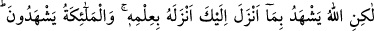
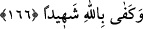

“huccet” kelimesi, mazeret anlamında kullanılmıştır. Halbuki Allah Teâlâ’nın
fiillerinden hiç biri hakkında kimsenin O’nun aleyhine delil ve hucceti olması muhaldir,
mümkün değildir. Bilakis O, dilediğini istediği şekilde yapar. Öyle ise âyetteki “huccet”
kelimesi, kullarına kereminin ve rahmetinin gereği olarak Allah indinde kabul edilmesi
bakımından mâzeret, reddi mümkün olmayan kesin delil gibidir. Nitekim Allah Teâlâ:
“Biz peygamber göndermedikçe (hiç bir kavme) azâb edecek değiliz.” (el-İsrâ,
17/15) buyurmuştur.
Peygamber (s.a.v.) şöyle buyurmuştur: “Allah’tan daha kıskancı yoktur. Onun içindir
ki fuhşun açığını da gizlisini de haram kılmıştır. Övülmeye Allah’tan daha lâyık olan
da yoktur. Onun içindir ki zatını övmüştür. Özür beyan edenin özrünü kabul etmeyi
Allah’tan daha çok seven de yoktur. Bu sebeple kullarına peygamberler göndermiş ve
kitaplar indirmiştir.”[212]
“Allah izzet sâhibidir” hiç bir işte ona üstün gelecek yoktur. Bütün işlerinde “hikmet
sahibidir.” Peygamberler göndermesi ve kitaplar indirmesi de O’nun hikmetli
işlerindendir.
166- Fakat Allah sana indirdiğine şâhitlik eder, onu kendi ilmi ile indirdi. Melekler
de (buna) şâhitlik ederler. Şâhit olarak Allah kâfidir.
Müşriklerin ısrarla: “Bize, semadan özelliklerini belirttiğimiz şekilde bir kitap
indirmedikçe, senin peygamber olarak gönderildiğine şehadet etmeyiz.” demeleri
üzerine Cenab-ı Hak buyuruyor ki: Onlar zaten senin risalet dâvânda doğru olduğuna
şâhitlik etmezler. “Fakat Allah sana indirdiğine,” insanları âciz bırakan ve senin
peygamberliğine delalet eden Kur’an’a “şâhitlik eder.” Onlar seni ne kadar inkar
etseler ve yalanlasalar bunu değiştiremezler. Çünkü Kur’an’ın önce ve sonra gelenleri
kendisine karşı çıkmaktan ve benzerini getirmekten âciz bırakan fesâhat ve belâğatı
O’nun (s.a.v.) nübüvvetinin doğruluğuna ve risâlet dâvâsındaki haklılığına şehâdet eder.
Allah Teâlâ’nın O’na indirdiğine şâhitlik etmesinin manası, peygambere bahşettiği
mûcizelerle doğruluğunu ispat etmesidir. Nitekim dâvâlar delillerle ispat edilir.
“Onu kendi ilmi ile indirdi.” Allah Kur’an’ı zâtından başkasının bilmediği kendine
has olan ilmi ile indirmiştir. O, belağatçıların âciz kaldığı eşsiz bir tarzda
oluşturulmuştur.
“Melekler de” senin nübüvvetine “şâhitlik ederler.” Eğer “Meleklerin şâhitlik
ettiğini nereden bileceğiz?” diye sorarsan, ben derim ki: Hz. Muhammed’in nübüvvetine
Allah’ın şâhitlik etmesi, meleklerin de şehadet ettiklerine delildir. Çünkü onlar, bu
hususta Allah’a tâbi olurlar.